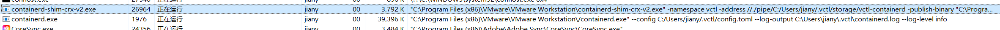

vctl是VMware最新开发的一个CLI工具，主要是用来创建满足OCI标准的容器。vctl包含在VMware Workstation Pro 16 和 VMware Fusion 12以上版本中。
使用vctl 首先在使用vctl之前，我们首先需要知道，该工具只是一个管理前端，真正的容器操作是由守护进程来实现的。因此在使用该命令之前，我们要首先检查守护进程的状态（默认情况下是关闭的）。vctl的容器运行时包括三个文件：
bin/containerd：这个进程就是用来执行容器相关指令的，检查方法是vctl system info，开启方法是vctl system start，结束方法是vctl system stop。
bin/containerd-shim-crx-v2：看到shim这个词，应该能够从docker联想到是用来作为容器根进程的，工作在CRX VM的容器和containerd进程之间。
bin/vctl：这个就是我们上面提到的前端管理工具。
上面我们提到了CRX VM，这个其实就是VMware专门用来运行容器的轻量级虚拟机，只要有一个容器创建那么就会开启一个CRX VM，同样删掉这个容器这个VM就会停止并删除。容器名和CRX VM的名字是一样的。
vctl的基本命令和docker完全一致，这也就是说，ps/run/start/stop/rm/rmi/build/create等命令都可以使用相同的方式使用。这里作为示例，给出一个nginx容器的创建过程。
1 2 3 4 5 6 vctl pull nginx vctl run --name=myNginx -t -p 8888:80 -d nginx vctl ps -a vctl stop nginx vctl rm nginx vctl rmi nginx
可以从任务管理器上看到相关进程的启动情况。

vctl的详细使用方法可以参考VMware的官方文档 。
创建k8s集群 从上面我们可以看到，vctl提供了类似于docker的容器管理功能，那么现在要创建k8s集群，只需要使用类似kubeadm的工具创建多个容器构成k8s的运行环境即可。这其中，KIND就是一个比较好用的k8s安装工具。从VMware Fusion 12开始，vctl工具提供了KIND的支持。使用方法也非常简单，只需要运行vctl kind即可。这条命令会做四件事情：
运行这条命令后，会弹出一个新的终端，这个终端上的kubectl、kind、docker等命令均指向的是刚才安装的KIND上下文环境，而不是原先系统安装的。
需要注意的是，vctl并不支持kind build和kind export logs命令，且CRX VM的默认配置是2G 2C。
现在已经有了kind的环境了，剩下的事情就交给kind了。KIND文档
最简单的命令，kind create cluster。
1 2 3 4 5 6 7 8 9 10 11 12 13 14 15 16 17 18 19 20 C:\Program Files (x86)\VMware\VMware Workstation\bin>kind create cluster Creating cluster "kind" ... • Ensuring node image (kindest/node:v1.18.2) 🖼 ... ✓ Ensuring node image (kindest/node:v1.18.2) 🖼 • Preparing nodes 📦 ... ✓ Preparing nodes 📦 • Writing configuration 📜 ... ✓ Writing configuration 📜 • Starting control-plane 🕹️ ... ✓ Starting control-plane 🕹️ • Installing CNI 🔌 ... ✓ Installing CNI 🔌 • Installing StorageClass 💾 ... ✓ Installing StorageClass 💾 Set kubectl context to "kind-kind" You can now use your cluster with: kubectl cluster-info --context kind-kind Thanks for using kind! 😊
使用kubectl cluster --context kind-kind可以看看刚刚创建的k8s集群状态。
1 2 3 4 5 6 C:\Program Files (x86)\VMware\VMware Workstation\bin>kubectl cluster-info --context kind-kind Kubernetes master is running at https://127.0.0.1:64039 KubeDNS is running at https://127.0.0.1:64039/api/v1/namespaces/kube-system/services/kube-dns:dns/proxy To further debug and diagnose cluster problems, use 'kubectl cluster-info dump'.
此时，kubectl get nodes和kubectl get pods等命令已经可以正常使用了，我们已经使用vctl创建了一个单节点的k8s环境。
看看原理 安装过程到这里就差不多了，更复杂的k8s集群只需要在kind中传入自定义的配置文件即可。如果这个时候我们使用docker ps命令查看真正用来承载k8s集群的容器，就会发现实际上只有一个容器在运行。
1 2 3 4 5 C:\Program Files (x86)\VMware\VMware Workstation\bin>docker ps -a ──── ───── ─────── ── ───── ────── ───────────── NAME IMAGE COMMAND IP PORTS STATUS CREATION TIME ──── ───── ─────── ── ───── ────── ───────────── kind-control-plane kindest/node@sha256:7b27a6d0f2517ff88ba444025beae41491b016bc6af573ba467b70c5e8e0d85f /usr/local/bin/entry... 192.168.100.132 64039:6443/tcp running 2020-09-17T16:50:22+08:00
是不是感觉很奇怪，因为如果你尝试过其他的安装方法，应该会有印象，那就是k8s的运行组件相当多，控制节点的apiServer、scheduler、controller-manager以及计算节点上kubelet这些在其他安装方法中一般都是由独立的容器来运行的，那么在这里为什么会只有一个呢？
通过查阅KIND文档可以发现，原来KIND使用node-image来运行这些组件，例如kubeadm和kubelet等等，而这些运行依赖和node-image本身则是由base-image来生成的。生成过程我们可以不用关心，现在让我们主要来看看node-image这个镜像生成的单个容器是如何运行所有的k8s组件。
使用docker exec -it kind-control-plane /bin/bash进入到容器中，首先ps看看运行的进程。
1 2 3 4 5 6 7 8 9 10 11 12 13 14 15 16 17 18 19 20 21 22 23 24 25 26 27 28 29 30 31 32 33 34 35 36 37 root@kind-control-plane:/kind# ps ajxf PPID PID PGID SID TTY TPGID STAT UID TIME COMMAND 0 6178 6178 6178 pts/3 6913 Ss 0 0:00 /bin/bash 6178 6913 6913 6178 pts/3 6913 R+ 0 0:00 \_ ps ajxf 0 1 1 1 ? -1 Ss 0 0:00 /sbin/init 1 104 104 104 ? -1 S<s 0 0:00 /lib/systemd/systemd-journald 1 113 113 113 ? -1 Ssl 0 0:18 /usr/local/bin/containerd 1 311 311 113 ? -1 Sl 0 0:00 /usr/local/bin/containerd-shim-runc-v2 -namespace k8s.io -id 00d79d58327ca059b96cdd9c651d12853a2e2622e65472230414dc15d65821bd -address /run/containerd/con 311 405 405 405 ? -1 Ss 0 0:00 \_ /pause 311 507 507 507 ? -1 Ssl 0 0:38 \_ kube-controller-manager --allocate-node-cidrs=true --authentication-kubeconfig=/etc/kubernetes/controller-manager.conf --authorization-kubeconfig=/etc 1 322 322 113 ? -1 Sl 0 0:00 /usr/local/bin/containerd-shim-runc-v2 -namespace k8s.io -id 482207771a3b7eba237dc037dba4f5717e54842f7bf38d367f391030a9091f38 -address /run/containerd/con 322 401 401 401 ? -1 Ss 0 0:00 \_ /pause 322 547 547 547 ? -1 Ssl 0 1:56 \_ kube-apiserver --advertise-address=192.168.100.132 --allow-privileged=true --authorization-mode=Node,RBAC --client-ca-file=/etc/kubernetes/pki/ca.crt 1 323 323 113 ? -1 Sl 0 0:00 /usr/local/bin/containerd-shim-runc-v2 -namespace k8s.io -id 5101a9a24071e5c10d052d01918361dee8a97a2822b4bb82bc772460ce0045a2 -address /run/containerd/con 323 399 399 399 ? -1 Ss 0 0:00 \_ /pause 323 586 586 586 ? -1 Rsl 0 0:47 \_ etcd --advertise-client-urls=https://192.168.100.132:2379 --cert-file=/etc/kubernetes/pki/etcd/server.crt --client-cert-auth=true --data-dir=/var/lib/ 1 324 324 113 ? -1 Sl 0 0:00 /usr/local/bin/containerd-shim-runc-v2 -namespace k8s.io -id e68a9f43205edd282548f6db0942c0c0b503a66894b8bf5e3d7d1b7e5be8a71d -address /run/containerd/con 324 404 404 404 ? -1 Ss 0 0:00 \_ /pause 324 500 500 500 ? -1 Ssl 0 0:10 \_ kube-scheduler --authentication-kubeconfig=/etc/kubernetes/scheduler.conf --authorization-kubeconfig=/etc/kubernetes/scheduler.conf --bind-address=127 1 632 632 632 pts/0 632 Ssl+ 0 0:50 /usr/bin/kubelet --bootstrap-kubeconfig=/etc/kubernetes/bootstrap-kubelet.conf --kubeconfig=/etc/kubernetes/kubelet.conf --config=/var/lib/kubelet/config. 1 810 810 113 ? -1 Sl 0 0:00 /usr/local/bin/containerd-shim-runc-v2 -namespace k8s.io -id 6bb16a0dfa1b006c0c241d54f84c8fc17d719ca791f482ede021e0a9ae118eec -address /run/containerd/con 810 860 860 860 ? -1 Ss 0 0:00 \_ /pause 810 928 928 928 ? -1 Ssl 0 0:01 \_ /usr/local/bin/kube-proxy --config=/var/lib/kube-proxy/config.conf --hostname-override=kind-control-plane 928 986 983 928 ? -1 Z 0 0:01 \_ [iptables-nft-sa] <defunct> 1 837 837 113 ? -1 Sl 0 0:00 /usr/local/bin/containerd-shim-runc-v2 -namespace k8s.io -id e17005058a2afb322c2c9179d5468b65be0bd8c2a24e3774373988413c93a7ec -address /run/containerd/con 837 877 877 877 ? -1 Ss 0 0:00 \_ /pause 837 935 935 935 ? -1 Ssl 0 0:00 \_ /bin/kindnetd 935 994 992 935 ? -1 Z 0 0:00 \_ [iptables-nft-sa] <defunct> 1 1108 1108 113 ? -1 Sl 0 0:00 /usr/local/bin/containerd-shim-runc-v2 -namespace k8s.io -id 905595d932140fd9406ae9487893d6e6351b15f33ab39528a4da00650df485ec -address /run/containerd/con 1108 1131 1131 1131 ? -1 Ss 0 0:00 \_ /pause 1108 1160 1160 1160 ? -1 Ssl 0 0:03 \_ local-path-provisioner --debug start --helper-image k8s.gcr.io/debian-base:v2.0.0 --config /etc/config/config.json 1 1244 1244 113 ? -1 Sl 0 0:00 /usr/local/bin/containerd-shim-runc-v2 -namespace k8s.io -id 410e09a86cb001d1b40378e153406d7a1c85c9f04f3e68ded23dc19c1fe50940 -address /run/containerd/con 1244 1305 1305 1305 ? -1 Ss 0 0:00 \_ /pause 1244 1380 1380 1380 ? -1 Ssl 0 0:08 \_ /coredns -conf /etc/coredns/Corefile 1 1252 1252 113 ? -1 Sl 0 0:00 /usr/local/bin/containerd-shim-runc-v2 -namespace k8s.io -id 0fdc07bfbd62610b783122e3d8dca8f5b1ad2a1aa07f2bb7b1194df280116957 -address /run/containerd/con 1252 1294 1294 1294 ? -1 Ss 0 0:00 \_ /pause 1252 1374 1374 1374 ? -1 Ssl 0 0:08 \_ /coredns -conf /etc/coredns/Corefile
那么从这里看就可以看出来KIND的构建方法了，在kind-control-plane这个容器中运行由kubelet程序用来支持一个运行节点，控制节点所需要的组件则是由内置的一个containerd来运行的，使用ctr -n k8s.io containers ls命令可以更加直观的看到。
1 2 3 4 5 6 7 8 9 10 11 12 13 14 15 16 17 18 19 20 root@kind-control-plane:/kind# ctr -n k8s.io containers ls CONTAINER IMAGE RUNTIME 00d79d58327ca059b96cdd9c651d12853a2e2622e65472230414dc15d65821bd k8s.gcr.io/pause:3.2 io.containerd.runc.v2 07dd95f8b88f11974154232d894e1ac9be76dec8c7e88c74a5d7f611d4bf94a0 k8s.gcr.io/kube-controller-manager:v1.18.2 io.containerd.runc.v2 0fdc07bfbd62610b783122e3d8dca8f5b1ad2a1aa07f2bb7b1194df280116957 k8s.gcr.io/pause:3.2 io.containerd.runc.v2 410e09a86cb001d1b40378e153406d7a1c85c9f04f3e68ded23dc19c1fe50940 k8s.gcr.io/pause:3.2 io.containerd.runc.v2 470d408aa74f66355ab637295a8e4777ec6775f84aba75a17efa861e5ede6470 k8s.gcr.io/kube-scheduler:v1.18.2 io.containerd.runc.v2 482207771a3b7eba237dc037dba4f5717e54842f7bf38d367f391030a9091f38 k8s.gcr.io/pause:3.2 io.containerd.runc.v2 5101a9a24071e5c10d052d01918361dee8a97a2822b4bb82bc772460ce0045a2 k8s.gcr.io/pause:3.2 io.containerd.runc.v2 652f25e9876c8efaae6b21f7289bfd88372ce9ec4ae6593f9e1c81bb3f513ddd k8s.gcr.io/etcd:3.4.3-0 io.containerd.runc.v2 6bb16a0dfa1b006c0c241d54f84c8fc17d719ca791f482ede021e0a9ae118eec k8s.gcr.io/pause:3.2 io.containerd.runc.v2 7f9f6cd14c83c08f5906a280f7fc5b178e766c0e4bb137a316d35c61f05c5031 k8s.gcr.io/kube-apiserver:v1.18.2 io.containerd.runc.v2 905595d932140fd9406ae9487893d6e6351b15f33ab39528a4da00650df485ec k8s.gcr.io/pause:3.2 io.containerd.runc.v2 c90fa3e64763263042ac6f29657e3a76de67a90308b9c7cf3a5cefbeda6788c8 k8s.gcr.io/kube-proxy:v1.18.2 io.containerd.runc.v2 d0c86ec34d96251e5bc4992183b21021c803e033463f581de9adf3bdadd4b4c8 k8s.gcr.io/coredns:1.6.7 io.containerd.runc.v2 d43682f949020c15ff5a7997bfbd872fd6959949962e57e9ccfaf4633ae77039 k8s.gcr.io/coredns:1.6.7 io.containerd.runc.v2 dbabbb66c17ba1317706b3e13a473b7e52653d6097f1fb4e71ca3aca51c17e37 docker.io/rancher/local-path-provisioner:v0.0.12 io.containerd.runc.v2 e17005058a2afb322c2c9179d5468b65be0bd8c2a24e3774373988413c93a7ec k8s.gcr.io/pause:3.2 io.containerd.runc.v2 e68a9f43205edd282548f6db0942c0c0b503a66894b8bf5e3d7d1b7e5be8a71d k8s.gcr.io/pause:3.2 io.containerd.runc.v2 f49eaf48b0b9ac0ef29d5dc6a8c3b8e26c9dd9a681715e8f431ad6ec4d452dbd docker.io/kindest/kindnetd:0.5.4 io.containerd.runc.v2
这里还有一个疑问，大部分容器引擎在Nesting运行的时候是需要做一定设置的，然而在containerd这里我没有看到额外的设置。是containerd原生就支持nesting运行还是说这是因为vctl的特殊运行方式（指一个容器一个VM）就不得而知了，未来有空会看看原理。